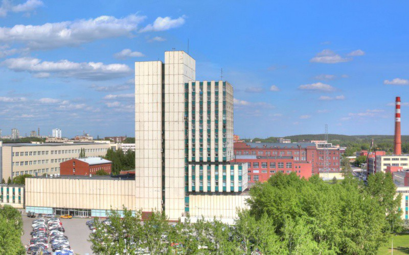

Российское предприятие по разработке и производству оптико-электронных систем и комплексов военного назначения и гражданского приборостроения
Уральский оптико-механический завод является разработчиком и производителем оптико-локационных станций (ОЛС) для боевых самолётов и оптико-электронных систем вертолётов российского производства, оптико-электронных систем для ВМФ и сухопутной техники. Приборы и комплексы, произведенные на предприятии, входят в состав бортового радиоэлектронного оборудования самолётов Су, МиГ, Ту, вертолётов Ми, Ка различных модификаций.

Уральский оптико-механический завод